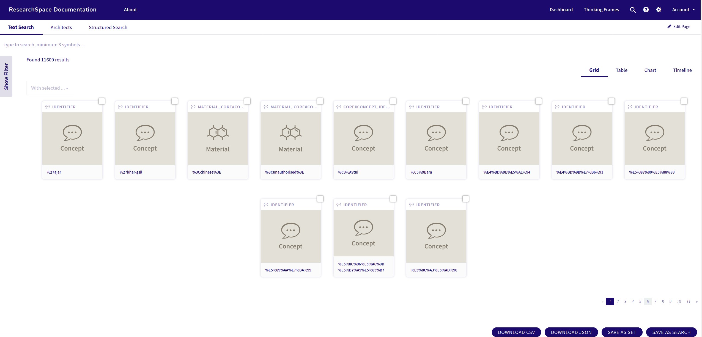
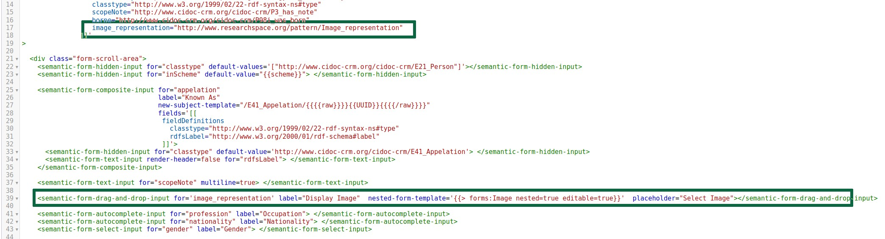

Tutorial
Introduction
We recommend that you do this tutorial after installing ResearchSpace. It will take you through some of the basic configuration areas of the system and give you a better sense of how the system works and manages Linked Data. Some elements may change as we add new user interfaces for configuration, but it is nevertheless useful to understand how the template system works and how it is manipulated.
In this tutorial you will;
- Add data
- Verify the data
- Add a search facet
- Add some Images to the data
- Create an input form to add more data
- Add more contextual information and create a Semantic network
Adding Data
ResearchSpace can add existing data in different ways. However, it has two smple ways of getting new data into the system. In the Administration area, accessed by clicking the COG symbol on the top bar, there is a Data Import utility that supports file import, either from a local disk or across a web connection (http or ftp)
.Some test data has been created using Wikidata. While wikidata records themselves provide only basic information and facts, but it provides a basic starting point for this tutorial. The data has already been created and saved on the researchspace web site at the address http://www.researchspace.org/docs/architectse.trig. This can be directly used for the tutorial, but if you want to know how the data was generated from the Wiidata query service (https://query.wikidata.org/) the query that constructed is available here
Loading the data File
Either download the file from the web site and store it on your local ResearchSpace file system. If you do this then choose the File Upload Tab, click on the upload panel and find the file or drag it in from the a file explorer. In the advanced option click the "Keep source NamedGraphs" option
Otherwise, click the Load by HTTP/FTP/File URL option and enter the URL to load the file from the Internet (using the keep source NamedGraphs option again)
In the Data Import utility
The file address is https://www.researchspace.org/docs/architect_demo.trig
When you click load the utility should confirm that file is loaded
Verifying the Data
There are a number of different ways of viewing the data. To provide a quick tour of the components here are a few
Search System
Click on the magnifying glass icon on the top bar. This opens the search system. Here the entities in the system are displayed.
The Search template is called
https://yourdomain/resource/rsp:SearchContentWhen the page has loaded click edit page at the top right of the screen
In the template a default search will be configured between the
Change the following parameters
At 1. Change the event-key value to 'Architect-Search' and title to 'Architects'. The first parameter differentiates the tab and the second provides a title on the page
At 2. change the domain to <http://www.cidoc-crm.org/cidoc-crm/E21_Person>
At 3. Also change the class using the crm prefic to crm:E21_Person . and add the filtering statement shown which only selects architects
At 4. Also change the domain and the filtering statement
This tab will only search people who are architects architect
This could have been achived by filtering the main search - but this is how new search tabs are created
After saving the template - click on the search glass at the top right of the screen
The frist tab will by default bring back all entities with the Domain crm:E1_CRM_Entity

The second tab is the new architect tab with only 15 results
Add Search Facets
If you look at the filters some default patterns have already been applied. These are the ontology pattens created automatically but they only cover one domain and range relation. In other words they only cover direct connections between Person and another entity. The PX_nationality pattern provides a result, because it directly relates to a Group with a label. The birth and death filters only provide the UUID of the Birth and Death entities which are intermediate nodes to other entities of interest, like place of birth and the date of birth. In order to see past these entities another pattern is needed that creates a path that performs the two jumps between Person and Place (with the birth event in the middle). The system automatically provides labels for entities.
Let's create a pattern with the path we need
The birth data relates to a place of birth. The pattern must go from Person > Birth > Place to reveal the place of birth.
Use the cog at the top left to go to the Admin tools and choose the Knowledge Patterns options from the panels.
Find the "was_born" pattern and open it up
In the details there is an Identifier with URI address with a "copy" icon next to it
Copy the uri and then click duplicate
Replace the URI with a new one which makes sense for your system. All IRI's must be unique.
A new KP is created with the same details
Change the range to be E53 Place - so the pattern is between Person and Place. Only the select pattern needs to be changed (Search only uses the select pattern) adding another line to change the positio of ?value to place rather than the birth. Birth is just replaced by another variable. The system uses the ?value variable as its reference.
In the results the new filter can be used against the architect search
Create a Form
Introduction
ResearchSpace has an an Authority and Entity manager system for manging Semantic Forms and comes with a number of default forms which can get you started and allow you to add more patterns
Stat by using the configurations button on the Dashboard
Then choose Configuration Manager
In Configuration manager you can already see some profiles for various entities including Person
We can create a new profile called Architects

Note that we haven't used a membership property because this will be an entity form not a more generic authority form
The P2 type which is alo in the data provided, ensures that only records with this type are included
The form IRI create a new template space
Save the profile and then go back to the person profile and click the yellow "Edit Form" button
Copy the entire template content and return to the Architect profile
Use the "Edit Form" form button to open the empty architects form and paste the person profile content into the template and save
We can see the results in the Entity Manager if you go back to the configurations panel and choose Entity Manager
Click on this Entity Profile
Here you can see the list of architects that you imported into the system
Have a look at the details of one of the records by selecting it with the pencil icon
You will see that some of the person profile patterns fit the data and some do not resulting in blank values
We need to change the form - Use the cog sysmbol at the top of the screen to go to the Admin panel and click on Knowledge Patterns Catalog
Search for some time within. The person profile uses a date range, but the Architect data just as a single date on which the person was born
Go into the knowledge patern and as before, copy the IRI then press Duplicate and add you own IRI.
Change the data type to date and save the new Knowledge Pattern. Copy the IRI using the copy icon next to it and then go back to the Authority Manager
Add this new pattern to the form by removing the old patterns for dates in the Birth composite of the form and replacing it with the new pattern
Before
After
`Save the form and then head back to the Entity manager and look at the change
You can now use the same process to add whatever fields you wish.
For example we can add an image field.
Add the Images
The images for these architects is available at https://www.researchspace.org/docs/architects_images.zip. Download them and have them ready on the Desktop
ResearchSpace has an existing template for images which can be used for upload, or drag and drop within the system
Copy this code into the form at the place illustrated and add the pattern to the fields at the top of the form. Make sure that it isnt placed within a composite section
Now go to the entity editor, open up architects, choose a record and click in the drag and drop area to get a file explorer to add an image

You can drag and drop - or click to open up the file manager.
Add Something Interesting
to be added